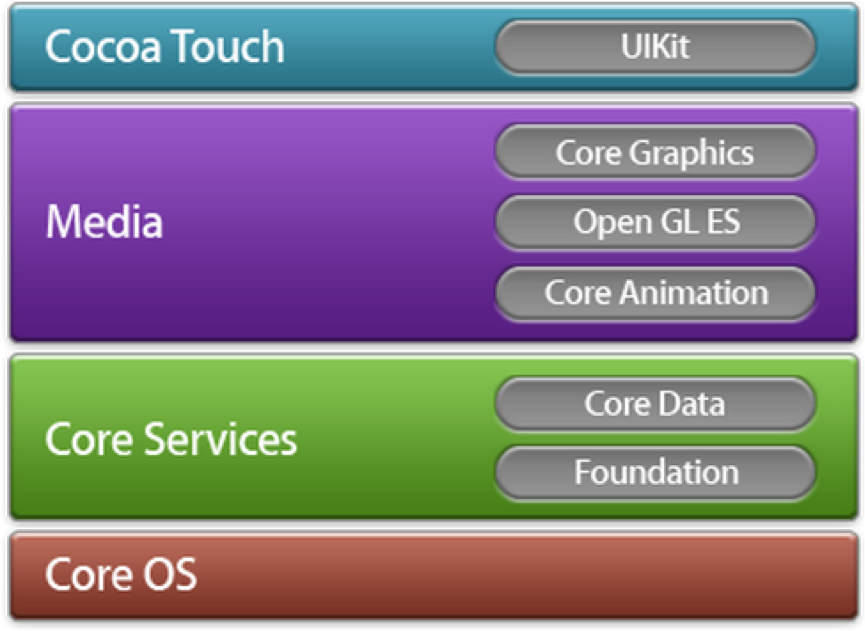

1. 系统框架层
每个框架对应IOS系统里的一层，每层建立在它下面层的上面。应该尽量使用上层的框架来代替下面的框架。更高层次的框架是对底层框架基于对象的抽象。

2. 两个基础框架
iOS应用程序基于Foundation和UIKit框架
Foundation
Foundation框架为所有的应用程序提供基本系统服务你的应用程序，UIKit和其它的框架都是建立在Foundation框架上面的。Foundation框架是用Object-C对CoreFoundation框架里许多特性的封装。
使用Foundation可以:
1. 创建和管理集合，比如数组和字典
2. 访问存储在应用程序里的图片和其它资源
3. 创建和管理字符串
4. 提交和接收通
5. 创建日期和时间对象
6. 自动发现IP网络上的设备
7. 操作URL流
UIKit
所有的iOS应用程序都基于UIKit，你不能是应用程序脱离这个框架。UIKit提供了在屏幕上绘制的机制，捕获事件，和创建通用用户界面元素。UIKit也通过管理显示在屏幕上的组件来组织复杂的项目。
使用UIKit可以：
1. 构建和管理你的用户界面
2. 捕获触摸和基于移动的事件
3. 呈现文字和web内容
4. 优化多任务程序
5. 创建定制的用户界面元素
3. 其他重要框架
Core Data , Core Graphics, CoreAnimation,和OpenGLES框架都是高级的技术
1. **CoreData框架管着理应用程序数据模型**
Core Data提供对象的管理，使用CoreData，你可以创建模型对象，并管理这些对象。你管理这这些对象间的联系并修改数据。CoreData提供的内建SQLlite技术可以高效的管理数据。
使用CoreData可以:
- 在库里存储和接受对象
- 提供基本的undo/redo
- 自动验证属性值
- 过滤、分组和优化内存中的数据
- 用[NSFetchedResultsController]管理表视图中的结果
- 支持基于文档的应用程序
2. **CoreGraphics框架帮助你创建图形
3. **CoreAnimation允许你创建高级的动画和虚拟效果
4. **OpenGL ES框架提供2D和3D绘图工具